9. Анализ поверхности атаки с помощью SNatch
SNatch – это инструмент с графическим интерфейсом, предназначенный для постобработки и отображения данных, полученных от инструмента Natch. Работать с этим интерфейсом можно через браузер.
9.1. Системные требования
Тестирование инструмента проводилось на всех официально поддерживаемых ОС. В качестве браузеров использовались Google Chrome версии 105.0.5148.2 и выше и Mozilla Firefox версии 101.0 и выше.
9.2. Настройка и запуск
Установка SNatch описана в подразделе Установка графической подсистемы SNatch.
В комплект поставки входят скрипты snatch_start.sh и snatch_stop.sh для запуска и остановки SNatch соответственно.
Скрипт snatch_start.sh запускает необходимые для работы службы, а также открывает браузер с интерфейсом.
В терминал, из которого был запущен скрипт, будут приходить сообщения от сервера, однако, он свободен для использования,
поэтому по окончании работы из него же можно запустить скрипт snatch_stop.sh для остановки служб.
Запускать snatch_stop.sh следует всегда, в противном случае процессы останутся висеть в памяти вашего компьютера до перезагрузки.
Все скрипты для SNatch можно запускать из любого расположения. Если по какой-то причине при запуске
snatch_start.sh страница в браузере не загрузилась, но при этом службы запустились, следует обновить страницу.
После выполнения скрипта snatch_start.sh в этом же терминале начнут выводиться информационные сообщения о работе SNatch и
сообщения о возникающих ошибках. Полученные сообщения можно использовать для отслеживания внутреннего процесса работы SNatch и
в качестве данных при формировании обращений об обнаруженных багах. Помимо этого ведется логирование работы в файл snatch.log, который расположен в каталоге /var/log/.
9.3. Регистрация пользователя и вход в SNatch
При первом запуске SNatch (либо после логаута) появляется страница входа.
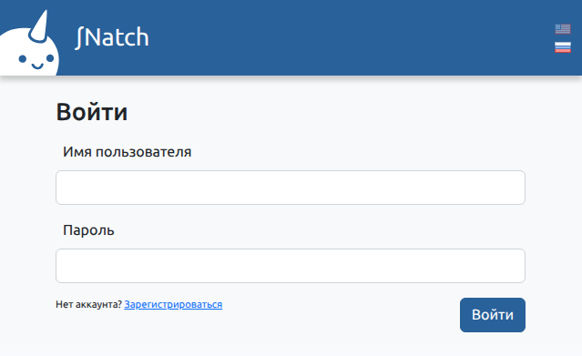
Если пользователь еще не был создан, то можно выполнить регистрацию нового пользователя (после чего автоматически будет выполнен вход). К паролю предъявляются минимальные требования по длине (4 символа), любой сложности.
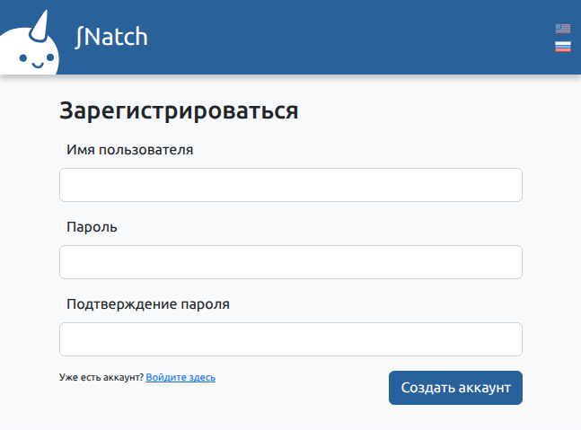
9.4. Работа со SNatch
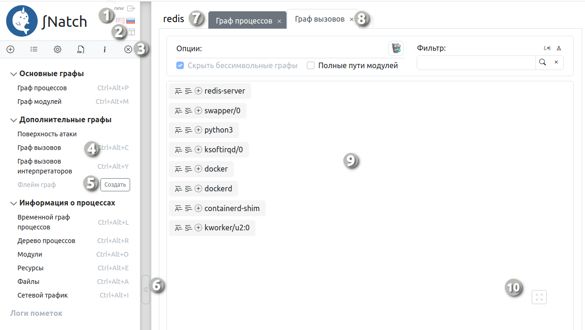
На данном рисунке показано окно SNatch, где цифрами обозначены основные элементы интерфейса:
Имя текущего пользователя и кнопка логаута.
Кнопки для выбора языка интерфейса (русский/английский) и кнопка вызова дэшборда сценария.
Панель главного меню, из которой можно создать новый сценарий, открыть список существующих, открыть настройки, выполнить экспорт сценария в PDF, открыть информацию о сценарии и закрыть сценарий.
Меню открытого сценария. Содержит список доступных данных для сценария (таких как: граф процессов, граф модулей, дерево процессов, граф вызовов и т.д.)
Кнопка для генерации дополнительных графов для сценария (граф вызовов, граф вызовов интерпретаторов и флейм граф).
Кнопка для сворачивания меню сценария.
Название открытого сценария. По нажатию на элемент активируется режим редактирования, и имя сценария можно изменить.
Панель открытых вкладок с содержимым. Каждая вкладка содержит имя и кнопку закрытия. Также на панели представлена кнопка для быстрого закрытия всех вкладок.
Окно отображения содержимого.
Кнопка перехода в полноэкранный режим. В этом режиме исчезает боковое меню, верхняя панель, а содержимое аналитики разворачивается на всю ширину окна.
9.4.1. Главное меню
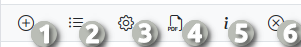
Кнопки главного меню выполняют следующие функции:
Создание нового сценария.
Открытие списка существующих сценариев (недоступно при отсутствии сценариев).
Настройки.
Экспорт в PDF аналитик открытого проекта.
Информация об открытом проекте.
Закрытие текущего проекта.
9.4.1.1. Создание сценария
Для создания нового сценария необходимо выбрать в главном меню пункт Новый сценарий….
При создании нового сценария открывается модальное окно:
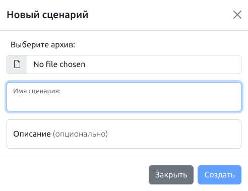
В данном окне пользователь должен ввести имя нового сценария в соответствующее поле Имя сценария, а также выбрать архив от Natch в поле Выберите архив. Эти поля являются обязательными при создании сценария, поэтому только при их заполнении становится активна кнопка Создать. Если в момент выбора файла архива поле имени не заполнено, то в него автоматически подставится имя файла. По нажатию на Создать создаётся сценарий, запускается обработка архива, и окно закрывается. При нажатии на кнопку Закрыть окно закрывается без создания сценария.
Помимо обязательных полей в данном окне присутствует опциональное поле Описание, в котором можно оставить пользовательские заметки. При работе со сценарием эту информацию можно будет увидеть в разделе О сценарии.
Название сценария не может содержать ряд специальных символов, и SNatch не даст их использовать как при первичном создании сценария, так и при переименовании.
При обработке архива можно параллельно запускать создание новых сценариев, однако это может привести к общему замедлению работы.
Во время обработки архива поверхности атаки в верхней части экрана появляется шкала прогресса следующего вида:
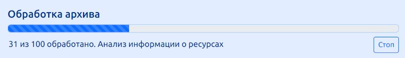
В процессе обработки текст, сопровождающий шкалу прогресса, будет изменяться таким образом, чтобы оповещать об актуальном статусе выполняемой задачи. Нажатие на кнопку Стоп прерывает процесс обработки.
При создании сценария (и открытии сценария без сохраненных вкладок) в нём по умолчанию открывается окно графа процессов.
9.4.1.2. Настройки
Для открытия окна настроек необходимо вызвать из главного меню пункт Настройки. Содержимое открытого окна будет иметь следующий вид:
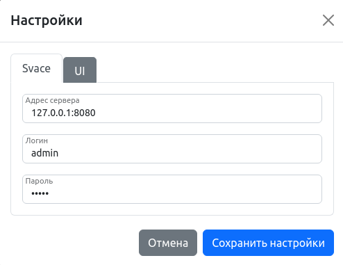
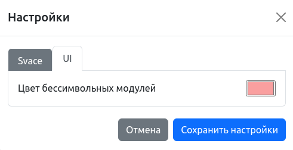
Во вкладке Svace представлены поля для конфигурации соединения со Svacer, а именно: сетевой адрес, логин и пароль. Это же окно будет открыто при первой попытке взаимодействия со Svacer из графа процессов, если параметры соединения не были ранее заданы. Во вкладке UI можно выбрать цвет, которым будут подчеркиваться модули с отсутствующими символами в аналитиках граф вызовов, поверхность атаки и ресурсы.
9.4.1.3. Экспортирование сценария
Для экспортирования основной информации о текущем сценарии необходимо вызвать из главного меню пункт Экспортировать в pdf. Содержимое открытого окна будет иметь следующий вид:
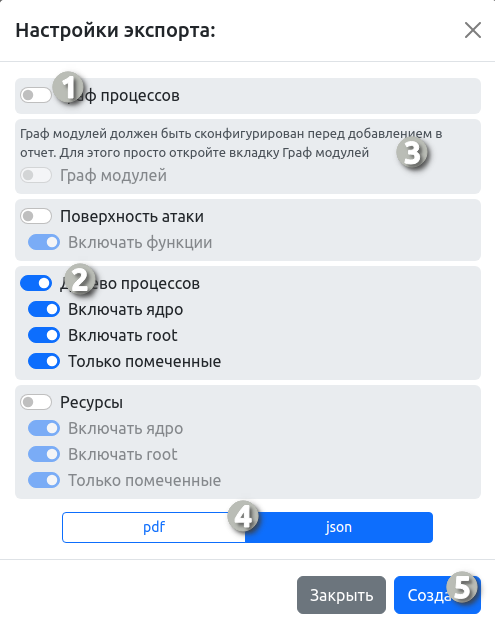
Отключенная аналитика, данные о ней не попадут в отчет.
Включенная аналитика, данные о ней будут добавлены в отчет.
Информационное сообщение о невозможности включения аналитики.
Переключатель выбора выходного формата для отчета.
Кнопки для закрытия модального окна и создания отчета.
В данном окне можно выбрать какие именно данные попадут в сгенерированный файл. Выбирать можно из: графа процессов, графа модулей, поверхности атаки, дерева процессов и ресурсов. Для графа процессов и графа модулей включение в экспорт доступно только после первого открытия, так как требуется первоначальная конфигурация этих графов (в противном случае в окне будет отображаться информационное сообщение). Для поверхности атаки, дерева процессов и ресурсов можно с помощью переключателей настроить содержимое отчета по каждой из аналитик. После нажатия кнопки Создать будет запущен процесс генерации файла, по завершении которого пользователю будет предложено сохранить полученный файл.
Помимо выбранных пунктов в сгенерированный файл всегда попадает содержимое вкладки О сценарии и таблица соответствия внутренних идентификаторов процессов к имеющимся о них данным.
9.4.1.4. О сценарии
Для открытия информации о сценарии необходимо вызвать из главного меню пункт О сценарии. Содержимое открытой вкладки будет иметь следующий вид:
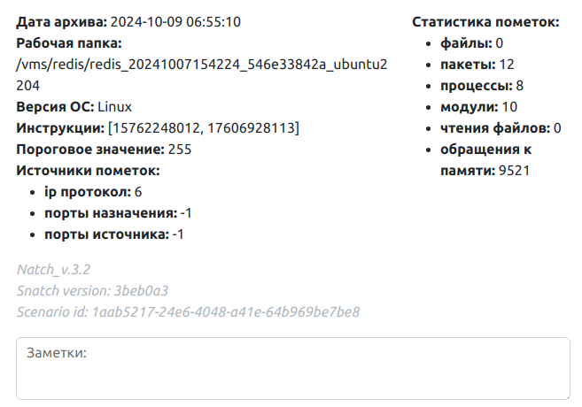
Окно содержит следующие элементы:
Данные о загруженном архиве: дата создания, рабочая директория, гостевая ОС, диапазон шагов (процессорных инструкций) сценария, порог пометок, данные о рассматриваемых источниках пометок.
Статистика помеченных данных в рассматриваемом сценарии.
Версия Natch, на которой происходила запись архива.
Заметки для сценария. По умолчанию здесь размещается содержимое поля Описание, если оно было использовано при создании сценария. Заметки можно редактировать, сохранение происходит автоматически.
9.4.1.5. Список созданных сценариев
В данной вкладке отображается список всех созданных сценариев. Нажатием на кнопку «Новый сценарий» можно перейти к окну создания сценария, кнопка «Удалить все» удаляет одновременно все сценарии. Для каждого пункта сценария доступно переименование по нажатию на иконку «карандаша» рядом с именем и закрытие по нажатию на «мусорную козину». Нажатие на сам пункт открывает сценарий.
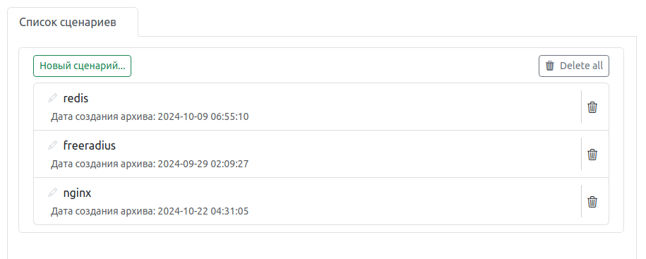
9.4.1.6. Дэшборд сценария
Открывается автоматически при создании нового проекта. В данной вкладке отображается обобщенная информация, полезная для понимания полноты открытого сценария. В дэшборде показаны подсказки, касающиеся отсутствия символов в сценарии, отсутствия помеченных данных, предложение создания графа вызовов и список модулей без отладочных символов.
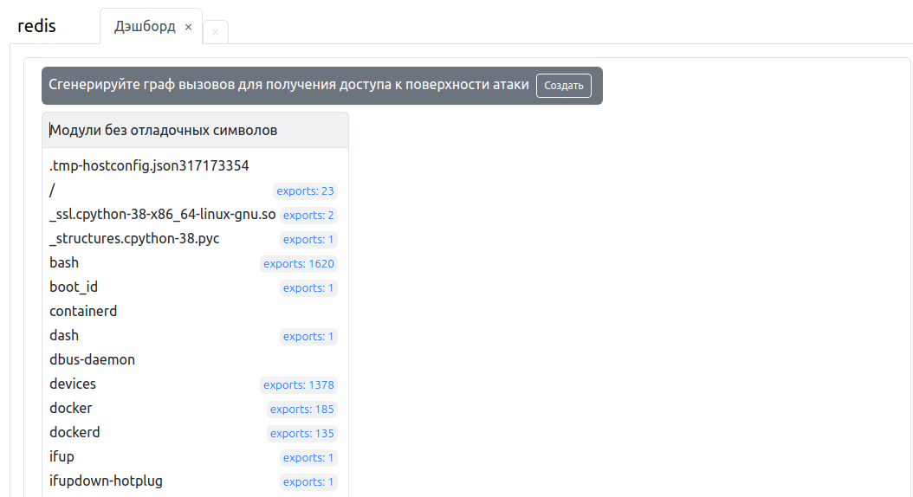
9.4.2. Информационный блок
Информационный блок – это единообразный элемент, поддерживаемый большей частью информационных окон, служащий для отображения расширенной информации о выбранном элементе. Для каждой вкладки с содержимым информационный блок индивидуальный, он сохраняет свое состояние при переключении между вкладками. Конкретное содержимое информационного блока и функционал для различных типов вкладок могут различаться, однако общие элементы также присутствуют:
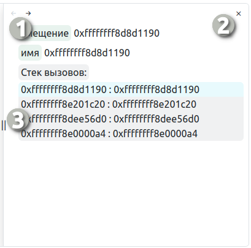
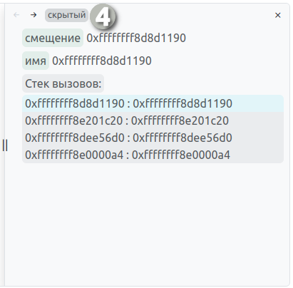
К общим интерфейсным элементам информационного блока относятся:
Стрелки перемещения по истории выбранных элементов. Становятся активны, если было выбрано более одного элемента. При перемещении по истории новый выбранный элемент будет добавлен после текущей позиции, а не в конец списка.
Кнопка закрытия информационного блока. На ряде вкладок поддерживается закрытие по нажатию в свободную область окна.
Элемент управления шириной блока. Перетягивается по горизонтальной оси.
Отметка о том, что текущий элемент «скрыт». Появляется, если выбранный элемент (либо элемент в истории) был скрыт опциями отображения содержимого во вкладке (например: Скрыть бессимвольные графы в графе вызовов).
9.4.3. Граф процессов
Граф процессов открывается автоматически после создания сценария, при наличии в сценарии помеченных данных (в противном случае будет выведено информационное сообщение). Его также можно открыть через меню сценария.
Для каждого нового сценария, построенного на основании одного и того же архива, первоначальное построение графа процессов и расположение узлов на нем будет одинаковым. При дальнейшем взаимодействии с графом, положение его узлов сохраняется. Таким образом при повторном открытии графа процессов узлы будут расположены так же, как и в прошлый раз, при этом не будет происходить перестроение графа с учетом физической модели.
Отдельно отметим, что на текущем этапе разработки граф процессов может содержать некоторые неточности. При несоответствии данных между графом и другими аналитиками, стоит ориентироваться на последние.
Граф процессов выглядит следующим образом:
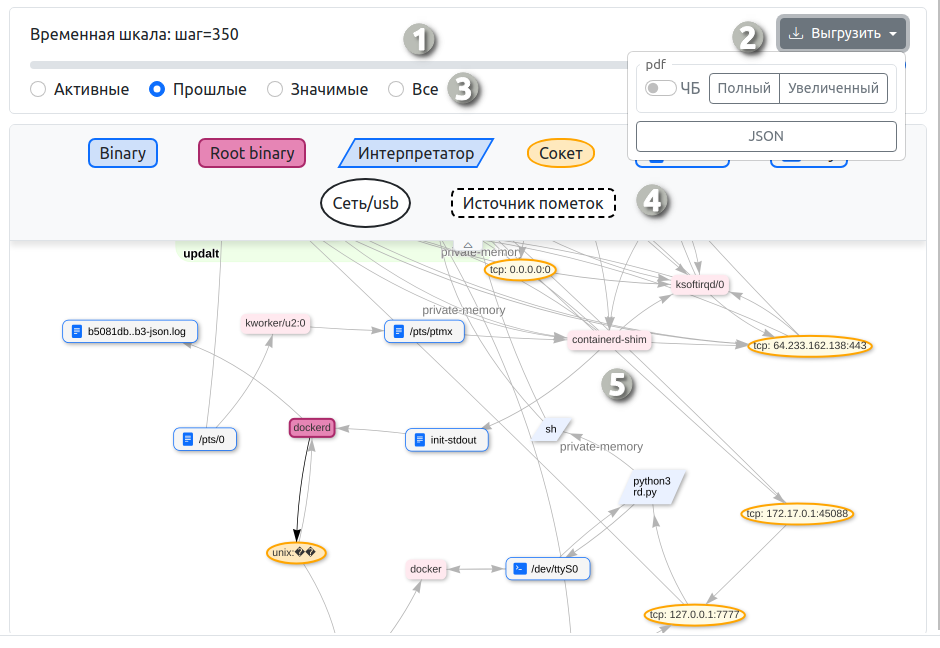
В окне графа процессов представлены следующие элементы:
Шкала выбора активного шага выполнения. Перемещение по данной шкале соответствующим образом изменяет отображаемый граф.
Кнопки для выгрузки графа в pdf и JSON. При выключенном элементе «ЧБ» происходит выгрузка цветного графа, при включенном – черно-белого. «Полный» режим выгрузки даёт весь граф, умещенный на одну страницу; «Увеличенный» – граф будет выгружен в текущем состоянии «приближения». По нажатию на кнопку JSON происходит сохранения графа в json-формате.
Выбор режима отображения графа. Граф процессов поддерживает 4 режима отображения:
Активные – отображаются элементы (узлы и стрелки), которые задействованы на текущем шаге;
Прошлые – отображаются элементы, которые задействованы на текущем шаге, а также те, которые произошли в прошлом (узлы и стрелки серого цвета);
Значимые – отображаются элементы, которые задействованы на текущем шаге, а также те узлы, которые были задействованы в прошлом и при этом еще будут задействованы в будущем, и прошедшие стрелки между ними (узлы и стрелки бледных цветов);
Все – отображаются элементы, которые задействованы на текущем шаге, а также те узлы (но не стрелки), которые вообще существуют на схеме (узлы бледных цветов).
Легенда графа. Описывает набор отображаемых на графе узлов и их внешний вид. Автоматически демонстрируется при первом использовании SNatch в текущей браузерной сессии. По нажатию на элемент легенда скрывается и может быть повторно вызвана нажатием на оставшийся «язычок». Элемент Источник пометок описывает не форму, а вид рамки элемента (на данный момент если источником помеченных данных являлась «Сеть», то её вид рамки не изменится, требуется доработка).
Граф процессов. Интерактивный граф, отображающий взаимодействие процессов, работавших с помеченными данными. Расположение узлов на графе можно изменять удобным для пользователя образом. При наличии информации о контейнерах, они будут отображены на графе в виде зеленых блоков, содержащих соответствующие им процессы. При нажатии на узел происходит отображение бокового информационного блока:
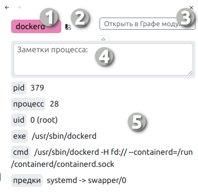
В информационном блоке содержатся следующие элементы:
Название процесса*, предоставляет возможность редактирования. При этом новое название будет автоматически обновлено во всех вкладках сценария.
Кнопка присваивания процессу цветовой метки. Новая метка автоматически появится во всех вкладках сценария.
Кнопка открытия соответствующего отфильтрованного графа модулей.
Заметки процесса*. Сохраняются для процесса (как и название), для всех вкладок сценария.
Свойства выбранного элемента.
*Доступны только для узлов «процессов». Данные интерактивные элементы присутствуют во всех информационных блоках процессов, вне зависимости от типа активной вкладки (граф процессов, дерево процессов, ресурсы и т.д.)
При нажатии правой кнопкой мыши на узел в графе процессов появляется контекстное меню, из которого можно начать работу со Svacer. При первой попытке взаимодействия пользователю будет предложено установить адрес сервера, имя и пароль пользователя (если ранее это не было установлено через раздел Settings). Затем пользователь увидит окно следующего вида:
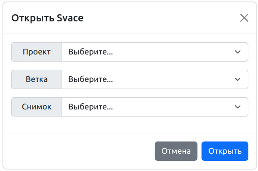
В данном окне можно выбрать проект Svace, ветку и снэпшот. После нажатия на кнопку Open будет открыто новое окно браузера со Svacer, сконфигурированным в соответствии с установленными параметрами.
9.4.4. Граф модулей
Открытие графа модулей происходит по нажатию на соответствующий пункт меню в разделе Основные графы. При нажатии открывается новая вкладка следующего вида:
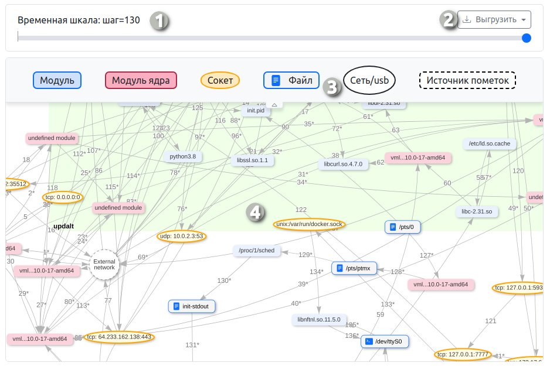
Функционал этого окна почти полностью повторяет функционал графа процессов:
Шкала выбора активного шага выполнения. Перемещение по данной шкале соответствующим образом изменяет отображаемый граф.
Кнопки экспорта графа в цветном, черно-белом варианте, для полного и «увеличенного» графа, и в json-формате. Функционал полностью повторяет аналогичный элемент в графе процессов.
Сворачиваемая легенда графа. Описывает набор отображаемых на графе узлов и их внешний вид. Автоматически демонстрируется при первом использовании SNatch в текущей браузерной сессии.
Граф модулей. Интерактивный граф, отображающий взаимодействие модулей, работавших с помеченными данными. Расположение узлов на графе можно изменять удобным для пользователя образом. Стрелки, описывающие взаимодействие, сопровождаются номером, соответствующим очередности взаимодействия. Номер с символом «*» означает, что между узлами было более одного взаимодействия (очередность номера описывает только первый случай этого взаимодействия).
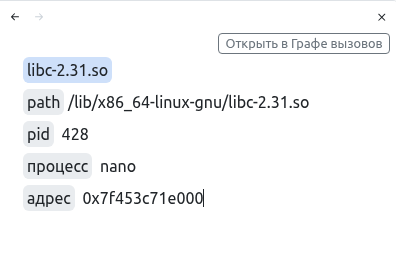
Так же, как и в графе процессов, нажатие на узел в графе модулей вызывает информационный блок, содержащее данные о выбранном элементе. Кнопка «Открыть в Графе вызовов» осуществляет переход в отфильтрованному по выбранному модулю графу вызовов. Первоначальное построение для одного и того же архива будет всегда одинаковым, а при взаимодействии с графом его положение сохраняется и воспроизводится при последующем открытии.
9.4.5. Поверхность атаки
После генерации графа вызовов в боковом меню появляется пункт «Поверхность атаки», по нажатию на который открывается одноименная вкладка. Содержимое вкладки представлено на рисунке:
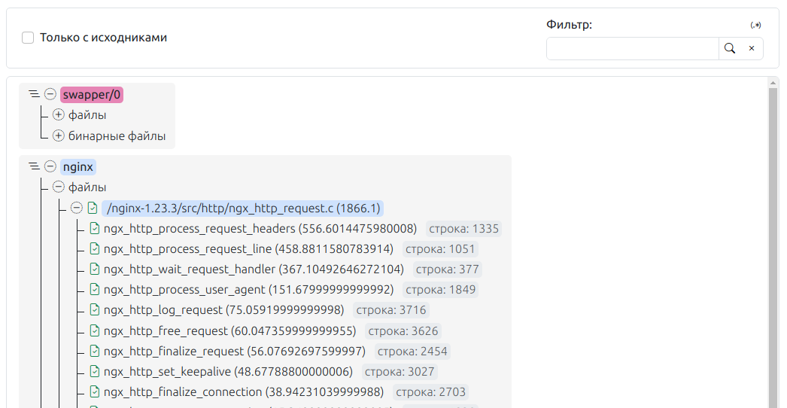
На данной вкладке отображаются древовидные структуры с процессом в корне, где для каждого процесса отображается ранжированный список объектов (исходные файлы, бинарные файлы, скрипты), в которых находятся функции из поверхности атаки.
В поверхность атаки попадают функции из графа вызовов, причём не только те, что непосредственно взаимодействовали с помеченными данными, но и вызывающий их код. Чтобы функции ранжировались в порядке, помогающем выбору целей фаззинга, используются следующие критерии:
Число обращений функции к помеченным данным. Считаются именно обращения, а не уникальные входные данные.
Взвешенное число обращений дочерних функций к помеченным данным. Чем глубже в подграфе вызовов находятся обращения, тем меньше их вес.
Если для файла имеются исходники, то рядом с его именем отобразится зеленая иконка «страницы», и по нажатию на имя файла произойдет переход к новой вкладке с открытым исходником. Если для ресурса содержится информация о его функциях, то они отобразятся в выпадающем поддереве. Для функций, при наличии исходников, также поддерживается переход к просмотрщику на нужную строку. Просмотрщик исходников выглядит следующим образом:
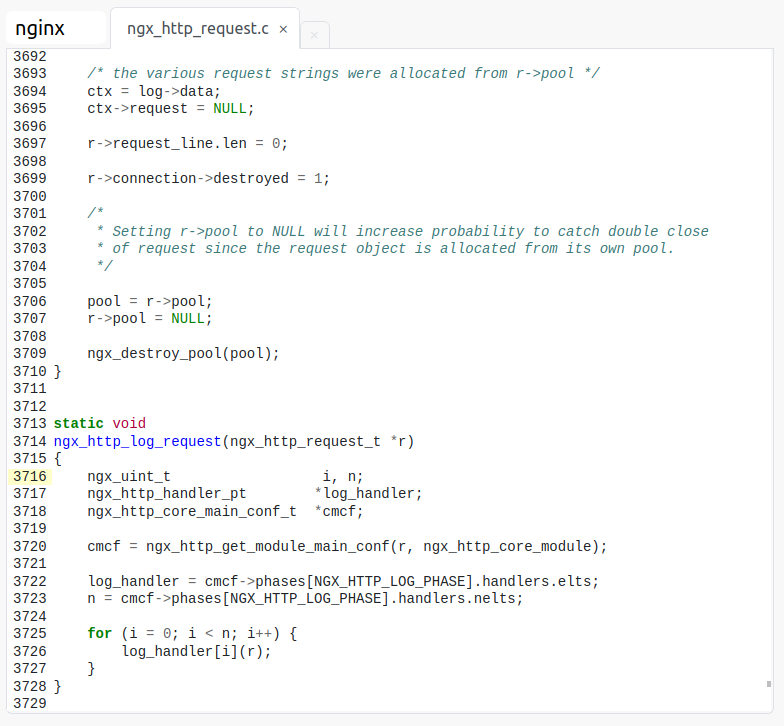
Просмотрщик поддерживает автоматическую подсветку синтаксиса исходного кода. Если переход в данную вкладку осуществлялся к функции, то номер соответствующей строки будет выделен желтым цветом.
Важно!
Просмотрщик исходников на данный момент является тестовой функциональностью и исходные коды по умолчанию в проекте отсутствуют.
Чтобы можно было увидеть исходные коды исследуемого ПО, потребуется выполнить команду natch coverage extract,
после чего архив будет обновлен и дополнен исходными кодами (если они были в образе).
9.4.6. Графы вызовов
9.4.6.1. Граф вызовов
В процессе первоначальной обработки архива поверхности атаки граф вызовов не создаётся. Чтобы граф вызовов появился в сценарии, необходимо нажать на кнопку Создать рядом с соответствующим пунктом в боковом меню. Повторное нажатие кнопки до завершения генерации приведет к отмене процесса. По завершении генерации в боковом меню сценария под пунктом Дополнительные графы станет активным пункт Граф вызовов и появится пункт Граф вызовов интерпретаторов (при наличии в архиве соответствующего лог файла, описано в граф вызовов интерпретаторов). Для открытия графа вызовов достаточно нажать на данный пункт в меню. После открытия появится новая вкладка с соответствующим названием, а в окне отображения содержимого откроется граф, представленный в виде древовидной структуры:
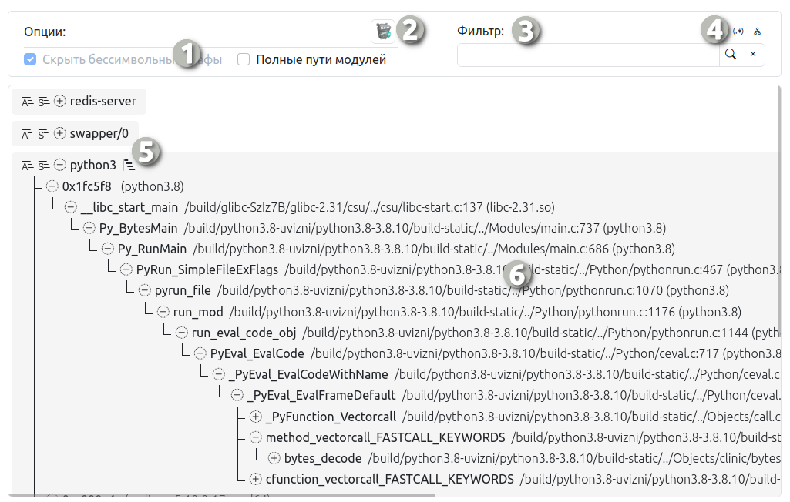
Отдельно заметим, что первоначальная загрузка графа включает в себя только загрузку корневых элементов. При раскрытии происходит частичная (в случае большой глубины графа) либо полная загрузка содержимого. В случае частичной загрузки, можно осуществить полную нажатием на специальную иконку рядом с именем дерева.
В данном окне представлены следующие элементы:
Чекбоксы опций. Скрыть бессимвольные графы прячет из отображаемого графа деревья, не содержащие распознанных символов (если данная опция неактивна, то в текущем сценарии все деревья содержат символьную информацию). Полные пути модулей задаёт формат отображения имен модулей на графе: сокращенный или полный путь.
Кнопка для запуска режима «связывания» со Svacer.
Поле для фильтрации графа. Вводимая строка расценивается как regex. При вводе строки и нажатии на кнопку Лупа либо клавиши Enter происходит фильтрация графа, где заданная строка ищется в полном пути функции, имени модуля и других текстовых параметрах записи. Если запись удалось обнаружить, то на отфильтрованном графе она будет выделена зеленой рамкой. Если записей, удовлетворяющих условиям фильтра, найдено не было, вместо графа будет выведено сообщение «Элементов, соответствующих фильтру, не найдено». Нажатие на символ «крестик» сбрасывает фильтрацию и возвращает граф к исходному состоянию.
Кнопки режима фильтрации: включение режима учета регулярных выражений и включение демонстрации дочерних узлов на отфильтрованном графе. Если режим дочерних активирован, то для каждого элемента, удовлетворяющего фильтру, будут показаны все дочерние узлы. В противном случае граф будет обрубаться на найденном элементе.
Элементы управления графом. Первая кнопка (три горизонтальные черты с буквой А) раскрывает все ветви графа; кнопка с буквой S раскрывает только символизированные ветви. Повторное нажатие кнопки сворачивает граф. Нажатие на кнопки +/- рядом с веткой раскрывает/сворачивает данную ветку в дереве. При зажатом Ctrl нажатие на + полностью разворачивает выбранную ветку дерева. Отдельно заметим, что при первичной загрузке содержимого дерева в качестве оптимизации происходит только частичная загрузка до определенной глубины. При этом справа от корневого узла появляется специальная иконка (несколько отрезков в столбик), по нажатию на которую происходит полная догрузка графа.
Содержимое графа. В корне дерева отображается имя процесса, к которому относится данный граф вызовов. Каждый узел дерева содержит имя вызванной функции (адрес смещения в модуле, при отсутствии символьной информации), путь к файлу исходного кода и строка в файле, относящаяся к началу функции, имя модуля. Синим цветом выделяются функции непосредственно взаимодействовавшие с помеченными данными. При наведении курсора на «синие» функции возникает всплывающая подсказка, содержащая номера строк в исходниках, где происходило взаимодействие с помеченными данным. Бежевым цветом выделяются функции интерпретатора, вызванные на этом шаге.
При нажатии на функцию правой кнопкой мыши появляется контекстное меню, из которого можно запустить генерацию вспомогательных данных для Futag, скопировать имя функции, а так же перейти к соответствующей записи в графе вызовов интерпретатора для «бежевых» функций. Сгенерированные данные для Futag будут помещены в файл в папке snatch_directory/uzzing_targets.
При нажатии на функцию левой кнопкой мыши происходит отображение информационного блока:
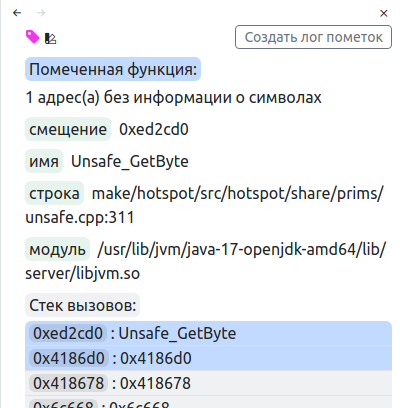
В данном окне содержатся: имя функции, её опции, стек вызовов вплоть до выбранной функции. Синим на стеке вызовов отображаются функции, взаимодействовавшие с помеченными данными. Кнопка Создать лог пометок доступна только для работавших с пометками функций (выделены синим цветом). При её нажатии будет сгенерирован файл с текстовым описанием всех операций пометок, вызванных данной функцией. Полученный файл отобразится в меню сценария в разделе Логи пометок, откуда его можно скачать. Иконка в левом верхнем углу используется для задания выбранной функции цветовой метки (аналогично цветовым меткам для процессов). В настоящее время цветовые метки функций распространяются только на функции внутри графа вызовов.
9.4.6.1.1. Интеграция со Svacer
При нажатии на кнопку Связать со Svacer в графе вызовов пользователю будет предоставлено окно следующего вида, из которого он может выбрать подходящий проект, ветку и снимок из Svacer:
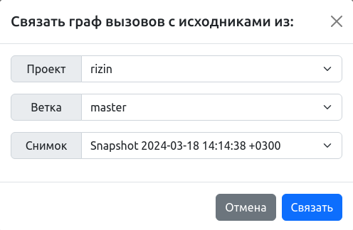
Если в выбранном сценарии существуют функции с маркерами, названия которых соответствуют функциям в графе вызовов (при этом будет выведено информационное сообщение, оповещающее были ли сопряжены новые функции и в каком количестве), то граф вызовов будет перезагружен и примет следующий вид:
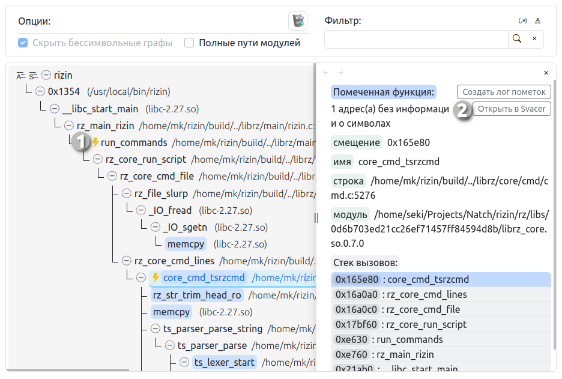
На полученном графе присутствуют новые элементы:
Пиктограмма Молния, которая свидетельствуют, что для данной функции было найдено соответствие в Svacer.
Кнопка для автоматического перехода к Svacer на выбранную функцию (переход выполняется в браузере по умолчанию).
9.4.6.2. Граф вызовов интерпретаторов
При построении графа вызовов строится и граф вызовов интерпретаторов (в настоящее время поддерживаются Python и Java), если в архиве содержалась соответствующая информация. Визуально и функционально данный граф повторяет классический граф вызовов:
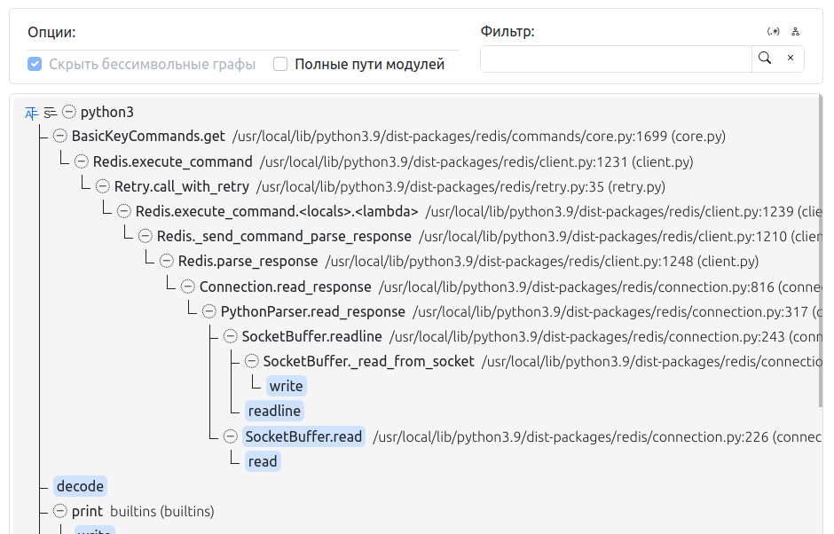
Из контекстного меню функции, вызываемого правой кнопкой мыши, можно перейти в классический граф вызовов, где будет выбран соответствующий элемент.
9.4.7. Флейм граф
Как и Граф вызовов при создании сценария флейм граф не генерируется. Для генерации необходимо нажать на кнопку Создать и по завершении вызвать флейм граф нажатием на пункт в меню сценария. Обращаем внимание, генерация флейм графа – ощутимо медленный процесс, поэтому если вам кажется, что генерация зависла, то с большой вероятностью это не так: просто требуется еще подождать. Во флейм графе отображаются функции в соответствии с порядком их вызова (снизу вверх), размер же зависит от продолжительности выполнения функции. Выглядит окно флейм графа следующим образом:
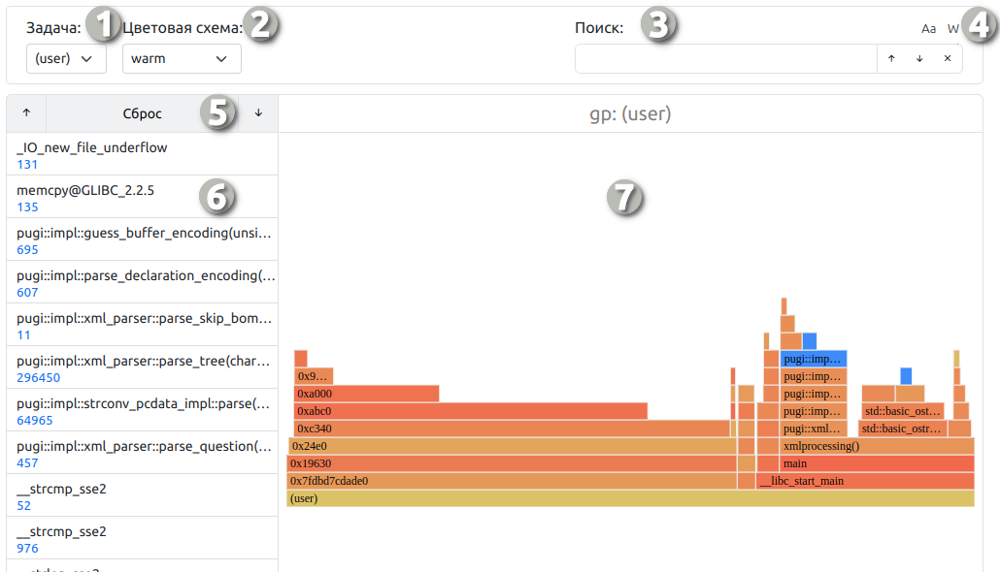
В данном окне представлены следующие элементы:
Выпадающий список построенных флейм графов, сгруппированный по процессам. Графы, относящиеся к пользовательским потокам, помечены словом user, выполнявшиеся ядром – kernel. При нажатии на пункт списка произойдет открытие соответствующего флейм графа.
Список цветовых схем графа. По умолчанию выбирается схема «warm» с оттенками теплого цвета для обычных функций. Во всех цветовых схемах яркий синий цвет обозначает функции, взаимодействовавшие с помеченными данными.
Поле поиска по выбранному флейм графу. Вводимая строка расценивается как regex. Поиск производится по строке и сопоставляется с именем функции, если элементы были найдены, то в поле поиска появляется счетчик вида «0/N» (где N – количество найденных совпадений), при этом первый найденный элемент становится активным на графе. Если совпадений не найдено, счетчик будет иметь вид «0/0». Перемещаться по найденным элементам можно интерфейсными стрелками либо нажатием клавиши Enter. Сброс к исходному состоянию происходит по нажатию кнопки «крестик».
Кнопки дополнительных условий поиска. «Aa» – активирует учёт регистра при поиске, «W» – ищет совпадения слова полностью.
Кнопки навигации по флейм графу. Используются для перемещения между функциями, работавшими с помеченными данными. Нажатие на кнопку вниз делает активным следующую такую функцию, вверх – предыдущую, а Сброс сбрасывает граф к исходному состоянию (активным становится корневой блок).
Список функций, работавших с помеченными данными. В данном списке показано имя функции (либо смещение относительно адреса загрузки модуля, в отсутствие символьной информации) и продолжительность работы функции (синим цветом) в выполненных процессорных инструкциях. При нажатии на пункт в этом списке, соответствующая функция на флейм графе становится активной и для нее вызывается информационный блок. При использовании поиска по флеймграфу содержимое данного списка заменяется результатами поиска.
Флейм граф. В верхней части показано имя открытого флейм графа. Синим цветом на флейм графе отображаются функции, взаимодействовавшие с помеченными данными. При нажатии на любой блок флейм графа он становится активным, т.е. занимает 100% ширины графа, с соответствующим расширением дочерних блоков. Также для выделенной функции будет отображен информационный блок со свойствами этой функции (по аналогии с информационными блоками, описанными выше, для графа вызовов, графа процессов и т.д.)
Информационный блок для элементов флейм графа выглядит следующим образом:
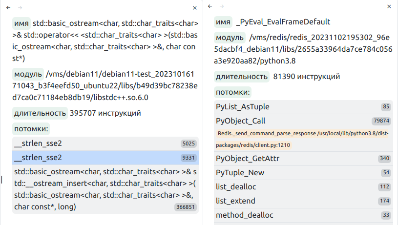
Здесь отдельно необходимо объяснить содержимое раздела потомки: данный список содержит потомков первого уровня для данного элемента, синим цветом выделены функции, работавшие с помеченными данными, в овале в правой части показана продолжительность работы функции в инструкциях. Если функции соответствует вызов функции интерпретатора, то информация об интерпретаторе будет указана в бежевом блоке. Каждый пункт списка активный, при нажатии происходит выбор соответствующего элемента на графе.
9.4.8. Временной граф процессов
Для открытия временного графа процессов необходимо вызвать из меню сценария пункт Временной граф процессов. Содержимое открытой вкладки будет иметь следующий вид:
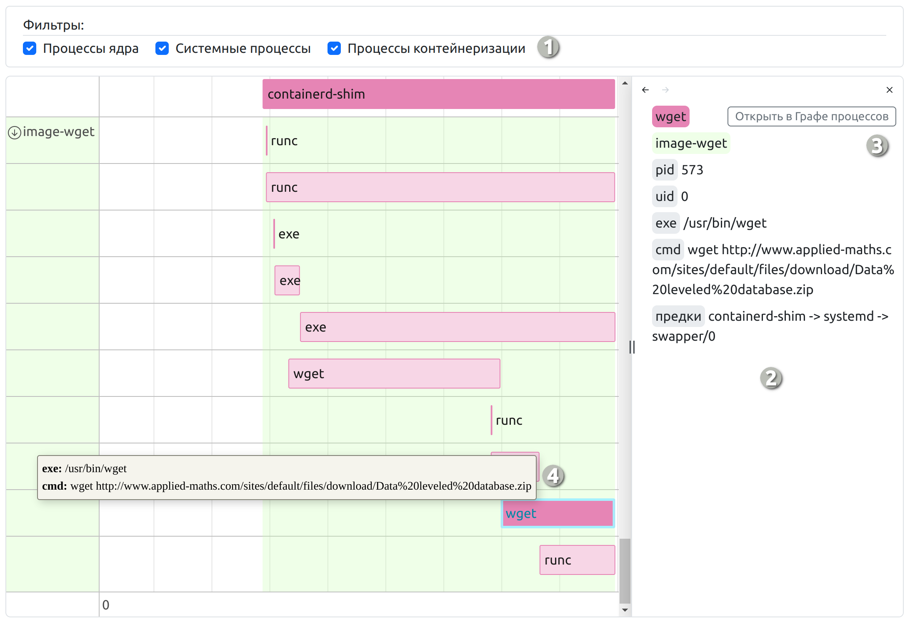
Временной граф процессов представляет собой граф, где горизонтальная ось отображает время выполнения процесса, от его начала и до завершения. На графе присутствует цветовая индикация:
синий – процессы, в которых происходило взаимодействие с помеченными данными;
бледно-розовый – процессы с root-привилегиями;
ярко-розовый – процессы с root-привилегиями, взаимодействовавшие с помеченными данными;
зеленым фоном отмечены границы контейнеров.
В данном окне представлены следующие элементы:
Набор фильтров отображаемой информации. При установленной галочке Процессы ядра на графе будут отображаться процессы уровня ядра; при галочке Системные процессы будут отображаться процессы ОС; при галочке Процессы контейнеризации будут отображаться служебные процессы функционирования контейнеров (на данный момент docker).
Боковая панель. При нажатии на процесс появляется боковая панель со следующей информацией о процессе (не для всех процессов доступен полный набор информации): имя процесса, название контейнера, pid, uid, имя пользователя при наличии, путь к исполняемому файлу, исполняемая команда, родительские процессы.
Кнопка открытия вкладки с графом процессов на моменте, когда выбранный процесс появился на графе первый раз.
Всплывающее меню с краткой информацией о процессе (появляется при наведении). Включает в себя путь к бинарному файлу и строку запуска при наличии.
По умолчанию граф полностью вмещается по ширине в отображаемое окно, однако можно увеличить масштаб графа с помощью комбинации Ctrl+Scroll. В таком случае движение по горизонтальной оси для просмотра графа выполняется с помощью перетаскивания графа с зажатой левой кнопкой мыши, а движение по вертикальной оси – с помощью Scroll мышью.
9.4.9. Дерево процессов
Для открытия дерева процессов необходимо вызвать из меню сценария пункт Дерево процессов. Содержимое открытой вкладки будет иметь следующий вид:
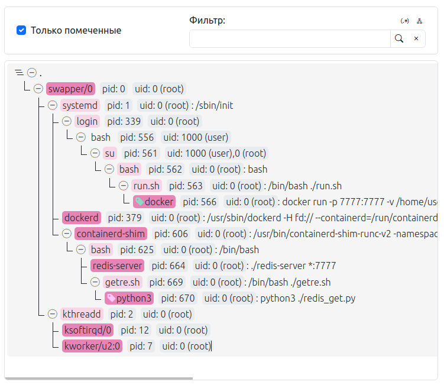
На дереве процессов показано отношение между процессами в формате «родитель-потомок», при этом процессы непосредственно взаимодействовавшие с помеченными данными, выделены синим цветом. Ярко-розовым цветом выделены процессы, запущенные с root-привилегиями и работавшие с помеченными данными, а бледно-розовым – просто запущенные с root-привилегиями. Помимо имени процесса на графе также отображаются его идентификаторы pid и uid, имя пользователя, и команда, которой он был запущен (если удалось её определить).
Для дерева доступен фильтр Только помеченные, который оставляет в дереве только те процессы, которые работали с помеченными данными, или являлись родителями процессов, работавших с помеченными данными.
Механизм фильтрации по строке аналогичен используемому в графе вызовов и полностью функционально его повторяет.
9.4.10. Список модулей
Для открытия списка модулей необходимо вызвать из меню сценария пункт Модули. Содержимое открытой вкладки будет иметь следующий вид:
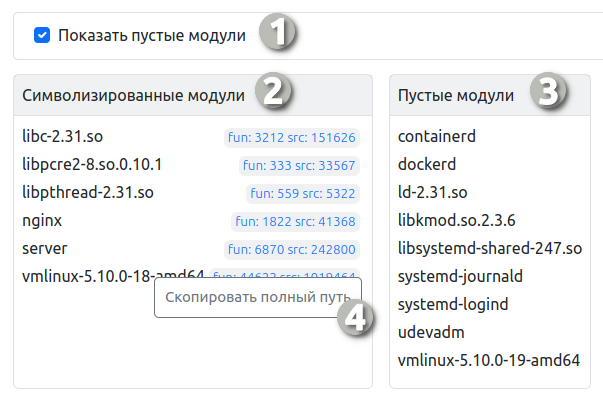
В данном окне представлены следующие элементы:
Чекбокс для отображения пустых модулей, т.е. без символьной информации. По умолчанию отключен.
Список символизированных модулей. В правой части указывается количество символизированных имен функций и строк в исходниках.
Список пустых модулей.
Контекстное меню для копирования полного пути модуля.
9.4.11. Список ресурсов
Для открытия списка ресурсов сценария необходимо вызвать из меню сценария пункт Ресурсы. Содержимое открытой вкладки будет иметь следующий вид:
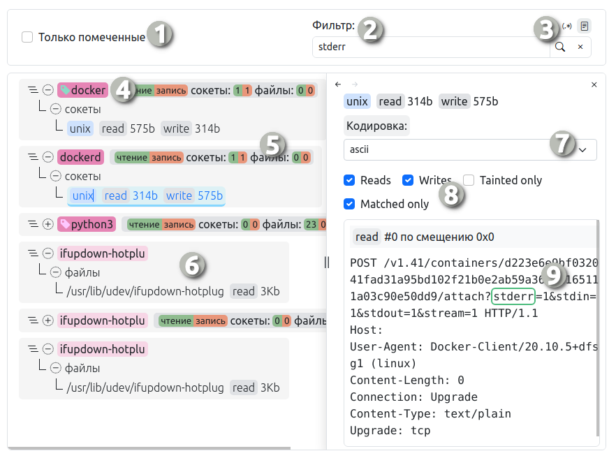
Ресурсы описываются древовидной структурой, где в корне располагается название процесса. Цветовая индикация процессов означают следующее:
бледно-розовый – процессы с root-привилегиями;
ярко-розовый – процессы с root-привилегиями, взаимодействовавшие с помеченными данными;
синий – пользовательские процессы, взаимодействовавшие с помеченными данными.
Окно содержит следующие элементы:
Фильтр Только помеченные, который оставляет в списке только те процессы, которые работали с помеченными данными.
Пользовательский фильтр по строке, в стандартном режиме аналогичен по функционалу фильтрации в графе вызовов.
Переключатель режима фильтрации с учетом регулярных выражений и «по содержимому транзакций». При активном переключателе «содержимого» поиск будет по содержимому транзакций, в результате в дереве останутся только те ресурсы, где данная строка была обнаружена.
Имя процесса, для которого будут отображаться использованные ресурсы.
Количество операций чтения и записи для данного процесса, данный элемент исчезает при полностью развернутом дереве.
Список ресурсов процесса. При наличии будут отображены: используемые им модули (синим обозначены работавшие с помеченными данными) с полным именем и базовым адресом загрузки; использованные сокеты; использованные файлы; использованные скрипты. Файлы и сокеты будут помечены синим, если через них проходили помеченные данные. Для сокета или файла при наличии будет указан объем данных операций записи или чтения. Список операций доступен для просмотра в панели операций при нажатии на элемент. При наличии для сокета указывается тип и адрес, после знака «<->» указывается адрес соединенного сокета, после знака «:» указывается имя процесса, с которым создано соединение посредством данного сокета.
Выбор кодировки представления данных.
Чекбоксы для выбора режима представления. С помощью чекбоксов для фильтра операций записи и чтения можно отобразить или скрыть соответствующий тип транзакций. Для ресурсов, взаимодействовавших с помеченными данными появляется чекбокс Транзакции с помеченными данными, при выборе которого в списке транзакций будут оставлены только те, в которых происходило взаимодействие. В режиме фильтрации «по содержимому» появляется чекбокс, с помощью которого можно переключаться между режимом отображения всех транзакций для выбранного ресурса, и транзакциями с найденной поисковой строкой.
Описание транзакции. Тип операции (чтение/запись), порядковый номер, смещение данных в файле для файловых операций, выделенная зеленой рамкой найденная строка (при наличии).
9.4.12. Список файлов
Для открытия списка файлов сценария необходимо вызвать из меню сценария пункт Файлы. Содержимое открытой вкладки будет иметь следующий вид:
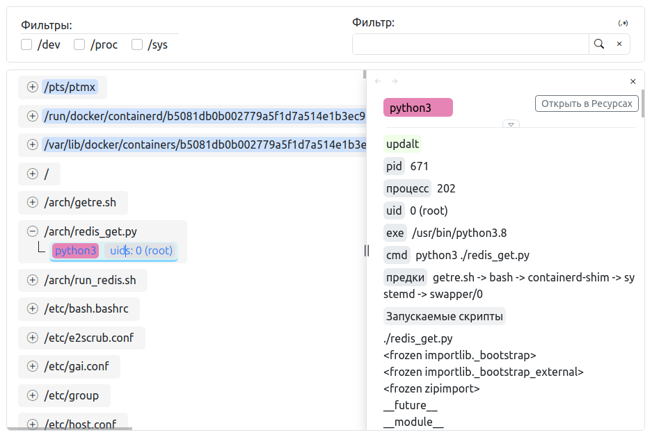
В списке представлены файлы, с которыми была работа в сценарии. Голубым цветом отмечены файлы, в которые попали помеченные данные. Для каждого файла можно развернуть список процессов, которые взаимодействовали с файлом (открывали/читали/писали/запускали его). Если файл открывал процесс ядра, то в список этот файл не попадет. В список процессов процессы ядра также не попадают. Цветовая индикация процессов аналогична используемой в списке ресурсов. В боковом меню отображается информация о выбранном процессе и кнопка Открыть в Ресурсах для перехода во вкладку Ресурсы с отображением информации об искомом файле.
Для списка доступны фильтры по имени директории, в которой расположен файл. Если фильтр недоступен, значит нет ни одного файла, подпадающего под него.
Механизм фильтрации по строке аналогичен используемому в графе вызовов и полностью функционально его повторяет.
9.4.13. Сетевой трафик
Доступ к информации о сетевом трафике будет предоставлен только при сборе соответствующих данных во время работы Natch (во время воспроизведения сценария должны быть помечены порты, по которым идёт обращение с хоста к виртуальной машине). При этом в архив помещается *.pcap файл. Для интерактивной работы с предоставленными данными необходимо иметь установленный в системе Wireshark. Для открытия данных о сетевом трафике сценария необходимо вызвать из меню сценария пункт Сетевой трафик. Содержимое открытой вкладки будет иметь следующий вид:
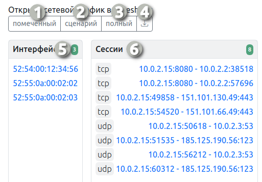
Окно содержит следующие элементы:
Кнопка открытия в Wireshark pcap файла с сетевыми пакетами (только входящими), которые были помечены в анализируемом сценарии. Открытие Wireshark с нужным файлом произойдет автоматически.
Кнопка открытия в Wireshark pcap файла с сетевыми пакетами (входящими и исходящими), которые появлялись в анализируемом сценарии.
Кнопка открытия в Wireshark pcap файла с сетевыми пакетами (входящими и исходящими), которые появлялись в системе, начиная со старта.
Кнопка для скачивания полного pcap файла.
Список MAC-адресов, участвовавших в работе анализируемого сценария. По нажатию на элемент списка произойдет открытие Wireshark с примененным фильтром для выбранного устройства.
Список сетевых сессий (взаимодействий между двумя сетевыми адресами), участвовавших в работе анализируемого сценария. Нажатие на элемент списка запустит Wireshark с фильтром на взаимодействие между указанными адресами. Зеленый блок в заголовке описывает количество элементов в списке.
9.5. Список горячих клавиш
9.5.1. Общие комбинации
Ctrl+Alt+N – вызывает модальное окно создания нового сценария
Ctrl+Alt+G – запускает одновременную генерацию флейм графа и графа вызовов
Ctrl+Alt+C – открывает граф вызовов (при наличии)
Ctrl+Alt+F – открывает флейм граф (при наличии)
Ctrl+Alt+P – открывает граф процессов
Ctrl+Alt+M – открывает граф модулей
Ctrl+Alt+L – открывает временной граф процессов
Ctrl+Alt+R – открывает дерево процессов
Ctrl+Alt+O – открывает список модулей
Ctrl+Alt+E – открывает список ресурсов
Ctrl+Alt+A – открывает список файлов
Ctrl+Alt+I – открывает сетевой трафик
Ctrl+X – закрывает текущую вкладку в окне SNatch. Также вкладку можно закрыть по нажатию колесиком мыши.
Ctrl+Shift+X – закрывает все открытые вкладки в окне SNatch
Shift+Tab – выбирает следующую открытую вкладку в окне SNatch
9.5.2. Управление интерактивными элементами вкладок
Флейм граф:
↓ – переход к следующей помеченной функции
↑ – переход к предыдущей помеченной функции
Ctrl+↓ – сброс состояния флейм графа
Граф процессов:
→ – переход к следующему шагу
← – переход к предыдущему шагу
Ctrl+→ – переход к последнему шагу
Ctrl+← – переход к первому шагу
Ctrl+↓ – выбор предыдущего режима отображения
Ctrl+↑ – выбор следующего режима отображения
Граф модулей:
→ – переход к следующему шагу
← – переход к предыдущему шагу
Ctrl+→ – переход к последнему шагу
Ctrl+← – переход к первому шагу
9.6. Изменение каталога для хранимых проектов
Данные загруженных в SNatch проектов по умолчанию хранятся в каталоге /home/$USER/snatch/media/. В случае недостаточного количества места в данном каталоге, каталог для хранения проектов может быть изменён. Для этого запустите скрипт /usr/bin/snatch/changedatadir.sh. После запуска скрипта понадобится ввести путь к новой директории. Заранее убедитесь, что у вашего пользователя имеются достаточные права для создания директории или укажите существующий каталог. Для изменения настроек в SNatch потребуются права суперпользователя. Скрипт предложит удалить старый каталог или сохранить его. Также в конце будет выполнен перезапуск SNatch.
Обратите внимание, что после изменения каталога проекты, загруженные в прежний каталог перестанут работать даже при условии сохранения старого каталога. Вам необходимо будет заново загрузить соответствующие архивы в SNatch.
9.7. Отладочная информация
При возникновении ошибок следует обратиться к отладочной информации и передать её разработчикам с описанием сценария возникновения ошибки.
Отладочная информация выводится в файл snatch.log в /var/log.